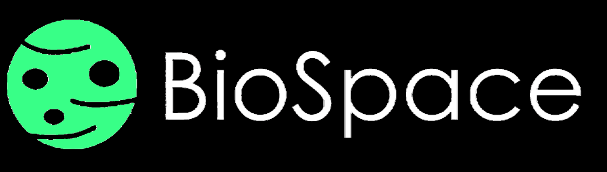
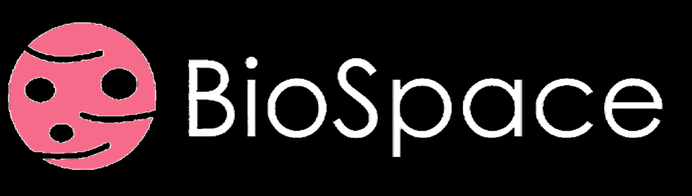
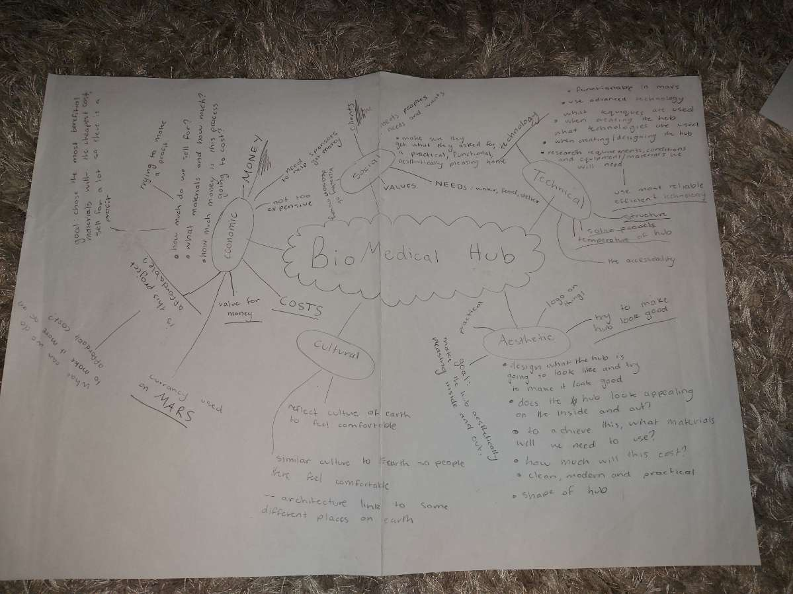

Our mission is to conduct Experiments on Mars and make a suitable experimental environment.
Biomedical hubs have requirements that they need to function. Travel to the "Required" section up the top to see them.
|  |  |  | |
| We did not use this because the green did not suit the "red planet" that mars is known as and also the black background did not fit our website style. | We did not use this logo because the green did not fit our intentions of focusing on mars or "the red planet" as more it is commonly known as. | We did not use this logo because our main intention for the website was for it to be white and even though this logo represents mars well we did not choose it because of the background. | This was the final logo choice. This is because it has a white background which matches our website and also shows the mars picture very well and was overll the best looking. |
 | This is our prototype for the research lab, this will be used for experiments within the hub that are related to mars. This is essential because researching is our entire purpose. |
 | This is the hospital for when somebody gets sick, it is near the reasearch lab so if anybody is inflited will illness from anything in the research lab they can instantly go to the hospital. |
 | This is the airlock. Essential for anything outer space because it keeps air inside the hub so we can breathe, otherwise we would not be able to survive. |
| This is a view of the Hub. you can see the door and four windows, the windows are made of insulators to keep heat inside so it is comfortable for our scientists. | |
| This is another view of the hub where you can see the door again and4 more windows. Again the whidows and door are made of insulators and the door has an airlock behind it. | |
 | This is a Birds eye view of the interior of the hub, you can see all the rooms where they should be in the hub. |
|  | This is our entire mind map for our researching and our hub zoomed out. |
| This is the reasoning for why we used all the materials that we used this is necessary so we can justify when we need to purchase these to our sponsors. | |
| This is the sketch of the research lab very early, this was mainly what we went for in our final design of our hub. | |
| This is our merch ideas, what we will use to for the merchandise of our company and out designs. | |
| This is an outside full view of the hub sketch where you can see all te outside parts and have descriptions. |
{kind=link}
{kind=link}
{kind=link}
{kind=link}
{kind=link}